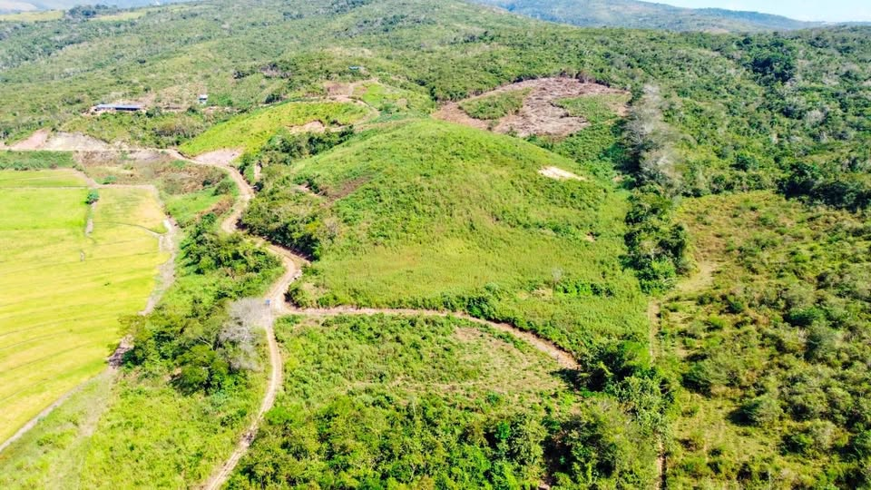

PEN205,000 4.1 ha

🌿 TERRENO DE 4.1 HECTÁREAS EN JUAN GUERRA – TARAPOTO Oportunidad de inversión en un terreno de gran extensión ubicado en Juan Guerra, San Martín, a pocos kilómetros de Tarapoto. Ideal para proyecto inmobiliario, casas de campo, lotización, agricultura, recreación o inversión de mediano y largo plazo. 📄 Área registral: 4.10 hectáreas 💰 Precio de venta: S/ 205,000 ✅ Venta al contado 🛣️ Acceso mediante camino público 💧 Canal de riego en la zona 🌱 Terreno rodeado de naturaleza y áreas productivas 📍 Juan Guerra – San Martín El terreno cuenta con una extensión que permite desarrollar diferent